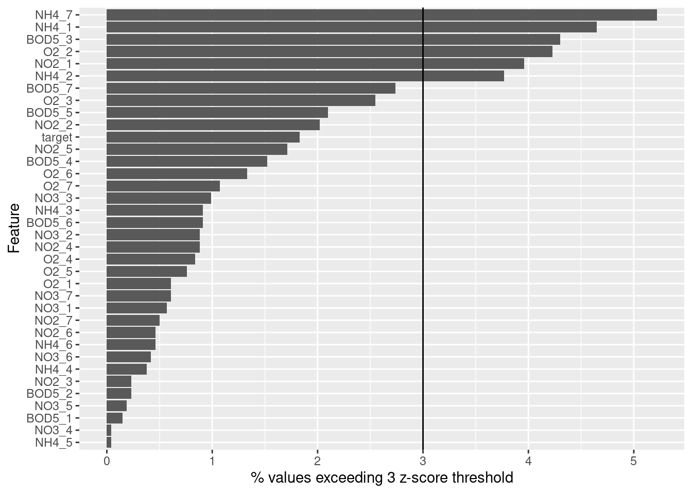
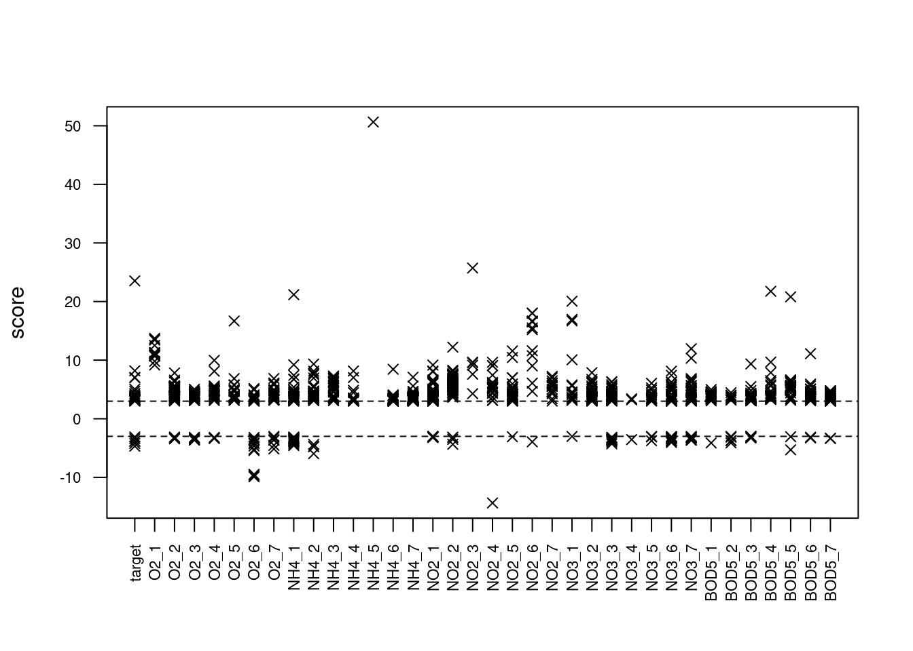
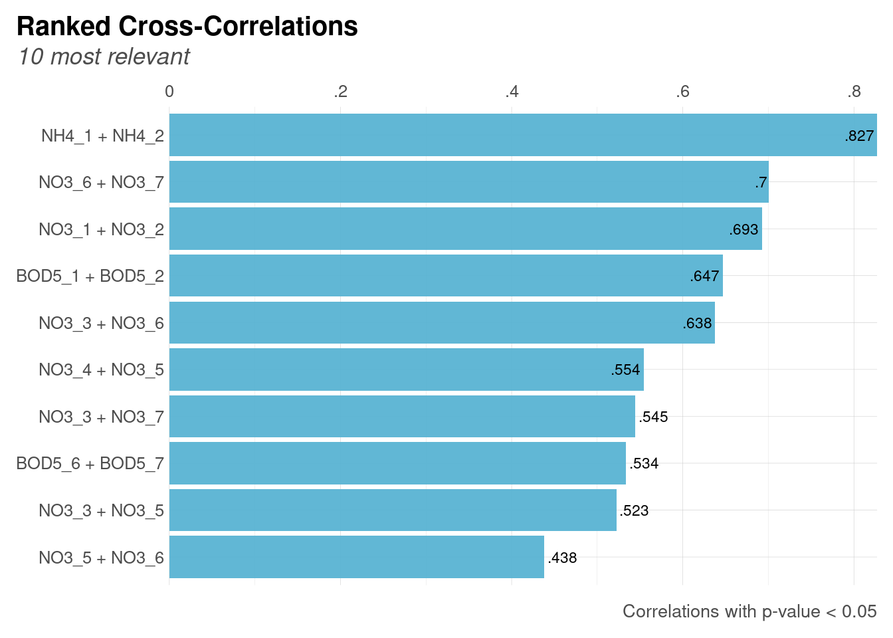

The Challenge
For this blog post, I will be tackling the Kaggle compettition Improve a Fixed Model the Data-Centric Way!
This is the challenge of the competition: Improve a dataset that is being used to train a random forest model. The model is fixed, so model performance can only be improved by modifying the dataset. In terms of dataset modifications, there are some additional limitations:
- Rows can be removed, but not added
- Columns cannot be removed or added
- Values in the dataset that are used to train the model can be transformed, but those transformations will not be applied to the validation dataset (which is held out until the challenge comes to an end)
This means that many of the tools available to a data scientist for improving an ML model, such as hyperparameter tuning, or data pre-processing applied to both training and test/validation datasets, are not available. The best options, therefore, will be to find ways to clean the training dataset that will yield better performance in the untouched validation dataset.
In this post, I will explore whether the training data can be improved using multivariate outlier imputation and by reducing feature multicollinearity.
Load libraries
Parallel backend
library(doFuture)
registerDoFuture()
plan(multisession, workers=4)Load the data
sample_submission <- read_csv('sample_submission.csv', show_col_types = F)Train/test split
Model pipeline and baseline
Model pipeline
Before doing anything else, I want to create a model pipeline function and establish a baseline of model performance. This pipeline and baseline model will allow me to quickly iterate, test, and benchmark changes to the training dataset.
fit_ranger_cv <- function(train, test, model_name){
set.seed(42)
model_ranger <-
# The parameters here mirror those that
# will be used in the competition model
rand_forest(trees = 1000,
min_n = 7) %>%
set_engine("ranger") %>%
set_mode("regression")
workflow_ranger <-
workflow() %>%
add_formula(target ~ .) %>%
add_model(model_ranger)
folds <- vfold_cv(train, v = 5)
fit_ranger <-
workflow_ranger %>%
fit_resamples(folds)
# Get in-sample performance over resamples
round((fit_ranger %>%
collect_metrics() %>%
filter(.metric == 'rmse'))$mean, 3) -> train_perf
# Evaluate performance on out-of-sample (test) data
ranger_fit <-
workflow_ranger %>%
fit(train)
round(rmse(test$target, predict(ranger_fit, test)$.pred), 3) -> test_perf
# Combine in-sample and out-of-sample into a dataframe
df_perf <- data.frame(model = model_name,
train_perf = train_perf,
test_perf = test_perf)
return(df_perf)
}Baseline performance
model train_perf test_perf
1 baseline 1.231 2.134I’m going to run that again so I can be sure the RNG seed is set properly and the results are reproducible – otherwise I’ll be chasing a moving target!
Outlier detection and removal / imputation
Outlier detection, sometimes called anomaly detection, involves identifying values that are “extreme” in relation to other records in the dataset. For example, a value might be considered an outlier if it deviates from the mean by more than 3 standard deviations. The impact of outliers on model performance will depend on the model. Linear regressions are fairly sensitive to outliers, whereas random forest models tend to be fairly robust to them. Nevertheless, multivariate outliers can still be a source of noise in training datasets, particularly smaller datasets.
Here I will consider several methods of outlier detection, pick one, and then proceed to consider removal/imputation.
1. Outlier detection
Univariate outlier detection
One simple univariate outlier detection method involves a “Z-score threshold”. In a normally distributed dataset, 99% of values will tend to fall between a Z-score of -3 to +3. This is why a Z-score threshold of +/- 3 is often used to identify outliers in practice.
For example, here’s a plot of the percentage of outliers found for each variable. I can see that some variables contained more outliers than others. In particular, there were 6 features with more than 3% extreme values.
train %>%
select(-id) %>%
outliers::scores(type="z") %>%
pivot_longer(everything()) %>%
group_by(name) %>%
summarize(n_outlier = sum(abs(value) > 3),
pct_outlier = round(sum(abs(value) > 3)/n()*100,2)) %>%
arrange(pct_outlier) -> train_pct_outlier
train_pct_outlier %>%
ggplot(aes(x = fct_inorder(name), y = pct_outlier)) +
geom_bar(stat='identity') +
coord_flip() +
xlab("Feature") +
ylab("% values exceeding 3 z-score threshold") +
geom_hline(yintercept = 3)
# A tibble: 6 × 3
name n_outlier pct_outlier
<chr> <int> <dbl>
1 NH4_7 137 5.22
2 NH4_1 122 4.65
3 BOD5_3 113 4.3
4 O2_2 111 4.23
5 NO2_1 104 3.96
6 NH4_2 99 3.77Other options for univariate outlier detection include using the inter-quartile range (IQR) or percentile-based thresholds.
Multivariate outlier detection
Another option is multivariate outlier detection. For multivariate outlier detection, random forest based methods have been growing in popularity within the data science community. There are two methods that I’ll consider here.
Isolation forest
The “isolation forest” works by trying to identify variables that can be isolated in branches when randomly splitting the data. From the isotree package documentation:
Isolation Forest is an algorithm originally developed for outlier detection that consists in splitting sub-samples of the data according to some attribute/feature/column at random. The idea is that, the rarer the observation, the more likely it is that a random uniform split on some feature would put outliers alone in one branch, and the fewer splits it will take to isolate an outlier observation like this.
Importantly, this method operates at the row level, allowing us to identify anomalous records, but not pinpoint specifically which features on which those records may have been outliers.
library(isotree)
isofor <- isolation.forest(train %>% select(-id), ntrees = 500, nthreads = 4)
iso_preds <- predict(isofor, train %>% select(-id))
train[which.max(iso_preds), ]# A tibble: 1 × 37
id target O2_1 O2_2 O2_3 O2_4 O2_5 O2_6 O2_7 NH4_1 NH4_2 NH4_3 NH4_4
<dbl> <dbl> <dbl> <dbl> <dbl> <dbl> <dbl> <dbl> <dbl> <dbl> <dbl> <dbl> <dbl>
1 2662 15.9 15.9 14.9 8.98 6.17 2.28 8.98 7.15 0.573 0.54 0.208 2.3
# ℹ 24 more variables: NH4_5 <dbl>, NH4_6 <dbl>, NH4_7 <dbl>, NO2_1 <dbl>,
# NO2_2 <dbl>, NO2_3 <dbl>, NO2_4 <dbl>, NO2_5 <dbl>, NO2_6 <dbl>,
# NO2_7 <dbl>, NO3_1 <dbl>, NO3_2 <dbl>, NO3_3 <dbl>, NO3_4 <dbl>,
# NO3_5 <dbl>, NO3_6 <dbl>, NO3_7 <dbl>, BOD5_1 <dbl>, BOD5_2 <dbl>,
# BOD5_3 <dbl>, BOD5_4 <dbl>, BOD5_5 <dbl>, BOD5_6 <dbl>, BOD5_7 <dbl>outForest
The outForest package implements a different random forest method of outlier detection in which each variable is regressed onto all others, and outliers are detected based on the difference between the observed value and the out-of-bag predicted value. This has the advantage of identifying outliers on both a row and column basis, providing more flexibility in terms of how outliers can be dealt with.
library(outForest)
set.seed(42)
outfor <- outForest(train %>% select(-id),
verbose = 0)
outForest::outliers(outfor) %>%
select(-rmse, -threshold) %>%
head() row col observed predicted score replacement
453 2003 NH4_5 3026.00 14.0353304 50.63951 12.175
811 1021 NO2_3 2.05 0.1152134 25.71619 0.064
4 237 target 40.78 11.1135703 23.52858 8.100
1315 2556 BOD5_4 55.40 5.8114438 21.74855 5.800
340 2149 NH4_1 4.20 0.4161047 21.17629 0.360
1327 241 BOD5_5 82.45 9.2994377 20.80525 8.400Below we can see the outliers identified for each variable and how anomalous those outliers were. Using this data, I can then choose a threshold and replace anomalous values by imputation. The outForest package provides different methods of imputation out of the box, defaulting to predictive mean matching.
I’ll use this method for detection because it’s multivariate, intuitive, and flexible.
plot(outfor, what = "scores")
2. Outlier removal or imputation
Now that I’ve decided on an outlier detection method, the next step is to decide what to do about the outliers. There’s two main ways outliers can be handled: Removal or imputation. Removal is often an extreme measure that can lead to information loss, so I tend to prefer imputation over removal.
Since I’ve decided to use outForest, I can also use its out-of-the-box imputation methods.
First, I’ll go back to the dataframe containing the outliers that it had detected and try to refine the threshold. By default, it was using a score threshold of 3. But I’m not comfortable with imputing so many values. My gut tells me that if I’m identifying more than 3-5% of the records as outliers, then my threshold is too low and I’m catching too many potentially legitimate values.
Here I can see that a score threshold of 8 yields around 2% outliers on a row-basis. That seems more reasonable
round((nrow(outForest::outliers(outfor) %>%
select(-replacement, -rmse, -threshold) %>%
filter(abs(score) > 8) %>%
distinct(row))/nrow(sample_submission)*100), 1)[1] 1.9Using this threshold, I will now impute the values.
Here I can see one of the outliers previously identified, and the value that was imputed for it.
train[1021,]$NO2_3[1] 2.05train_outlier_adjusted[1021,]$NO2_3[1] 0.064And now I can quickly run the random forest model again, with the new imputed training dataset, and compare it against the baseline model.
I see that outlier imputation has improved in-sample performance considerably (which is to be expected since the training dataset on which the cross-validation was performed is now much cleaner!), but it actually had a fairly marginal impact on out-of-sample performance.
ranger_fit_1 <- fit_ranger_cv(train_outlier_adjusted, test %>% select(-id), 'outliers imputed')
ranger_fit_1 %>%
mutate(train_pct_improved = round((baseline_fit$train_perf-train_perf)/baseline_fit$train_perf*100, 2),
test_pct_improved = round((baseline_fit$test_perf-test_perf)/baseline_fit$test_perf*100, 2)) %>%
bind_rows(baseline_fit) -> ranger_fit_1
ranger_fit_1 model train_perf test_perf train_pct_improved test_pct_improved
1 outliers imputed 1.080 2.128 12.27 0.28
2 baseline 1.231 2.134 NA NAFeature multicollinearity
Another option for data cleanup I can explore is addressing feature multicollinearity. This is when two or more features in the dataset are highly correlated. Like outliers, the impact of this will depend on the model. Random forest models are typically robust to multicollinearity when it comes to model performance, but it can severely impact the feature importances.
Nevertheless, I can explore whether addressing feature multicollinearity would improve model performance.
Some of the features are highly correlated (at r > .6), namely:
NH4_1withNH4_2NO3_1withNO3_2NO3_6withNO3_7NO3_3withNO3_6BOD5_1withBOD5_7
lares::corr_cross(
train %>% select(-target, -id),
max_pvalue = 0.05,
top = 10
)Warning in .font_global(font, quiet = FALSE): Font 'Arial Narrow' is not
installed, has other name, or can't be found
A simple fix for collinearity here would be to remove one variable from each of these pairs. I’ll remove the one with the larger numerical suffix. This is somewhat arbitrary. And fitting the model again, I see that removing collinear features improved in-sample and out-of-sample performance only marginally.
train %>%
select(-NH4_2, -NO3_2, -NO3_7, -NO3_6, -BOD5_2) -> train_with_collinearity_fix
test %>%
select(-NH4_2, -NO3_2, -NO3_7, -NO3_6, -BOD5_2) -> test_with_collinearity_fix
ranger_fit_2 <- fit_ranger_cv(train_with_collinearity_fix, test_with_collinearity_fix, 'fix collinearity')
ranger_fit_2 %>%
mutate(train_pct_improved = round((baseline_fit$train_perf-train_perf)/baseline_fit$train_perf*100, 2),
test_pct_improved = round((baseline_fit$test_perf-test_perf)/baseline_fit$test_perf*100, 2)) %>%
bind_rows(ranger_fit_1) -> ranger_fit_2
ranger_fit_2 model train_perf test_perf train_pct_improved test_pct_improved
1 fix collinearity 1.217 2.123 1.14 0.52
2 outliers imputed 1.080 2.128 12.27 0.28
3 baseline 1.231 2.134 NA NASo to summarize: I’ve used two methods to clean the dataset: 1) random forest based multivariate outlier detection and imputation, and 2) removing multicollinear features. These cleanup techniques achieved only marginal gains in out-of-sample model performance with a random forest model, supporting the common wisdom that random forest models are robust to outliers and multicollinearity.